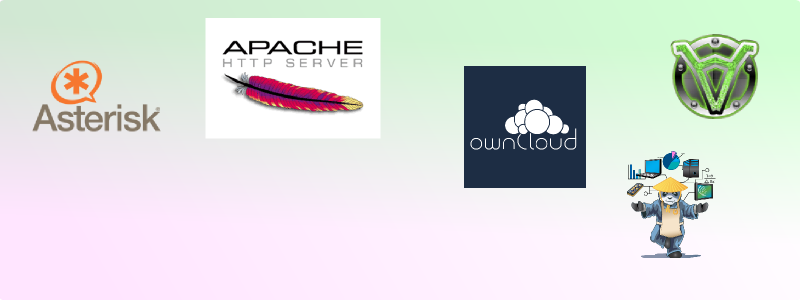
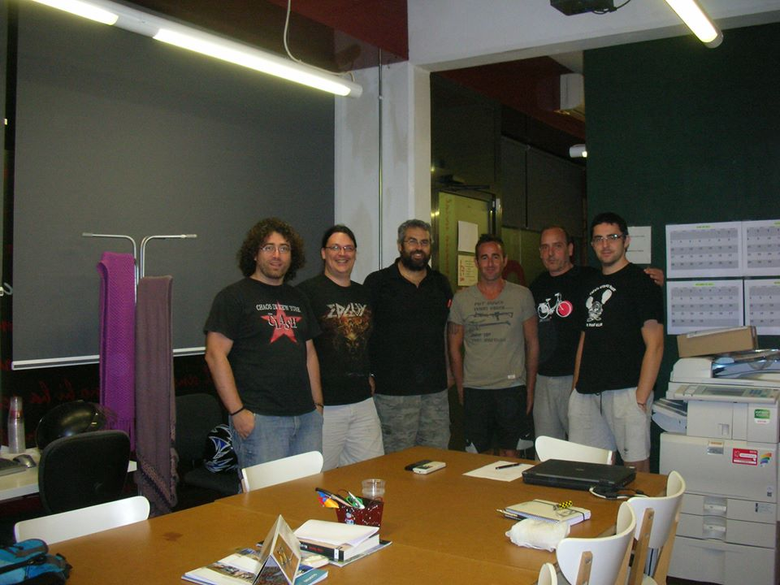

Connectem el teu edifici a la xarxa ciutadana Guifi.net.
Telefonia i Internet. Preparat per connectar i funcionar.

Donem serveis de valor afegit a Guifi.net

Treballem amb el teixit local per l'economia social.
Social
Volem obrir alternatives a l'oligopoli de les grans empreses de telecomunicació
i els seus abusos.
Construïm un entorn més just per treballadors i usuaris.
Econòmic
No ens cal farcir el compte de resultats,
només cobrir costos.
Si trobem formes de reduir-los,
els beneficis es reinverteixen en millorar el servei
o es repercuteix en les quotes.
Lliure
No volem usuaris lligats.
La xarxa està basada en estàndars oberts i els equips pertanyen als usuaris.
Qualsevol pot instaŀlar o mantenir la seva part de la xarxa
o trobar a algú altre que ho faci.